Lasse Schlör
lasse-schloer@unibo.it
MMM SB & GA meeting
2026-04-20
Lasse Schlör
lasse-schloer@unibo.it
MMM SB & GA meeting
2026-04-20

| Candidate Outcome | ESS |
|---|---|
| initial_double_support_apdm_d1_μ/mad_compensated/hc_pre_sym/top_svr/median | 112 |
| sagittal_maximum_angle_apdm_d1_hann5/mad_compensated/hc_pre_sym/svr/median | 132 |
| toe_out_angle_apdm_abs_μ/mad_compensated/hc_pre_sym/top_svr/median | 159 |
| sagittal_maximum_angle_apdm/mad_compensated/hc_pre_sym/svr/median | 170 |
| cadence_apdm_d2_hann11_μ/mad_compensated/hc_pre_sym/svr/median | 191 |
| terminal_swing_apdm_d1_abs_μ/mad_compensated/hc_pre_sym/top_svr/median | 193 |
| terminal_swing_apdm_μ/mad_compensated/hc_pre_sym/svr/median | 200 |
| sagittal_maximum_angle_apdm_d1_abs/mad_compensated/hc_pre_sym/svr/median | 202 |
| initial_plus_mid_swing_apdm_d1_abs_hann5_μ/median_compensated/hc_pre_sym/top_svr/median | 210 |
| toe_out_angle_apdm_abs_hann11_μ/mad_compensated/hc_pre_sym/svr/median | 231 |
ESS: Estimated sample size per trial arm to detect 50%
progression reduction in a 2-year randomized controlled trial of
early-stage
spinocerebellar ataxia with 2 measurements. (Power: 90%, one-sided
significance level: 5%.)
| Candidate Outcome | ESS |
|---|---|
| abc | 255 |
| sara | 291 |
| abc41 | 305 |
| sara_pg | 381 |
ESS: Estimated sample size per trial arm to detect 50%
progression reduction in a 2-year randomized controlled trial of
early-stage
spinocerebellar ataxia with 2 measurements. (Power: 90%, one-sided
significance level: 5%.)
| Candidate Outcome | ESS |
|---|---|
| coeff2_abs_dft_acc_y_strides_lumbar_d2_hann11d_μ/mad_compensated/hc_pre_sym/svr/median | 93 |
| coeff3_imag_dft_acc_y_strides_lumbar_d2_abs_μ/median_compensated/hc_pre_sym/svr/median | 96 |
| coeff3_imag_dft_acc_y_strides_lumbar_d2_abs_hann5_μ/median_compensated/hc_pre_sym/svr/median | 96 |
| coeff2_abs_dft_acc_y_strides_lumbar_d1_μ/mad_compensated/hc_pre_sym/top_svr/median | 99 |
| coeff2_abs_dft_acc_y_strides_lumbar_hann5d_μ/mad_compensated/hc_pre_sym/svr/median | 100 |
| coeff2_abs_dft_acc_y_strides_lumbar_d2_μ/mad_compensated/hc_pre_sym/svr/median | 100 |
| coeff2_abs_dft_acc_y_strides_lumbar_d1_hann5d_μ/mad_compensated/hc_pre_sym/svr/median | 104 |
| coeff3_imag_dft_acc_y_strides_lumbar_d1_abs_μ/median_compensated/hc_pre_sym/svr/median | 115 |
| coeff2_abs_dft_acc_y_strides_lumbar_d2_hann5d_μ/mad_compensated/hc_pre_sym/top_svr/median | 115 |
| coeff3_imag_dft_acc_y_strides_lumbar_d1_abs_hann11d_μ/mad_compensated/hc_pre_sym/svr/median | 116 |
ESS: Estimated sample size per trial arm to detect 50%
progression reduction in a 2-year randomized controlled trial of
early-stage
spinocerebellar ataxia with 2 measurements. (Power: 90%, one-sided
significance level: 5%.)
| Candidate Outcome | ESS |
|---|---|
| cumulative_gyr_y_strides_abs_d2_abs_μ/median_compensated/hc_pre_sym/svr/median | 134 |
| cumulative_acc_y_strides_lumbar_abs_d2_abs_hann11_μ/median_compensated/hc_pre_sym/svr/median | 135 |
| cumulative_gyr_y_strides_abs_d2_μ/mad_compensated/hc_pre_sym/svr/median | 145 |
| cumulative_gyr_y_strides_abs_hann5d_μ/mad_compensated/hc_pre_sym/svr/median | 145 |
| cumulative_gyr_y_strides_abs_d2_abs_hann5_μ/median_compensated/hc_pre_sym/svr/median | 146 |
| cumulative_acc_y_strides_lumbar_abs_d2_hann5d_μ/mad_compensated/hc_pre_sym/svr/median | 147 |
| cumulative_acc_y_strides_lumbar_abs_d2_μ/mad_compensated/hc_pre_sym/svr/median | 150 |
| cumulative_acc_y_strides_lumbar_abs_hann5d_μ/mad_compensated/hc_pre_sym/svr/median | 150 |
| cumulative_acc_y_strides_lumbar_d2_abs_hann11_μ/median_compensated/hc_pre_sym/svr/median | 152 |
| cumulative_acc_y_strides_lumbar_abs_d1_hann5d_μ/mad_compensated/hc_pre_sym/svr/median | 152 |
ESS: Estimated sample size per trial arm to detect 50%
progression reduction in a 2-year randomized controlled trial of
early-stage
spinocerebellar ataxia with 2 measurements. (Power: 90%, one-sided
significance level: 5%.)
| Candidate Outcome | ESS |
|---|---|
| cadence_mobgap_d1_abs_hann5_μ/median_compensated/hc_pre_sym/top_svr/median | 119 |
| stride_length_mobgap_normed_d1_abs_hann5d_μ/mad_compensated/hc_pre_sym/top_svr/median | 137 |
| stride_length_mobgap_normed_d1_hann5d_μ/mad_compensated/hc_pre_sym/svr/median | 159 |
| stride_length_mobgap_d1_abs_hann5_μ/median_compensated/hc_pre_sym/top_svr/median | 161 |
| stride_length_mobgap_d1_hann5d_μ/mad_compensated/hc_pre_sym/svr/median | 173 |
| stride_length_mobgap_normed_d2_abs_hann5d_μ/mad_compensated/hc_pre_sym/svr/median | 196 |
| stride_length_mobgap_normed_d1_abs_hann11d_μ/mad_compensated/hc_pre_sym/svr/median | 205 |
| stride_length_mobgap_d2_abs_hann5d_μ/mad_compensated/hc_pre_sym/svr/median | 208 |
| cadence_mobgap_d1_abs_hann11d_μ/mad_compensated/hc_pre_sym/svr/median | 211 |
| cadence_mobgap_d1_abs_hann5_μ/median_compensated/hc_pre_sym/svr/median | 214 |
ESS: Estimated sample size per trial arm to detect 50%
progression reduction in a 2-year randomized controlled trial of
early-stage
spinocerebellar ataxia with 2 measurements. (Power: 90%, one-sided
significance level: 5%.)